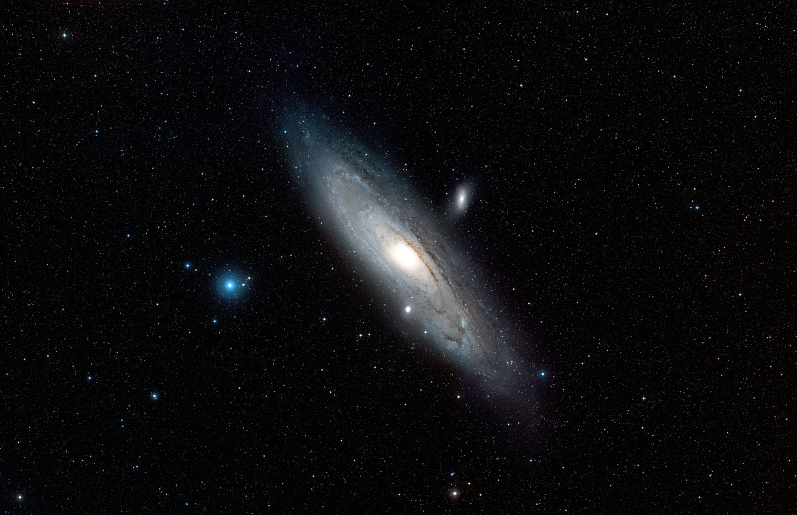
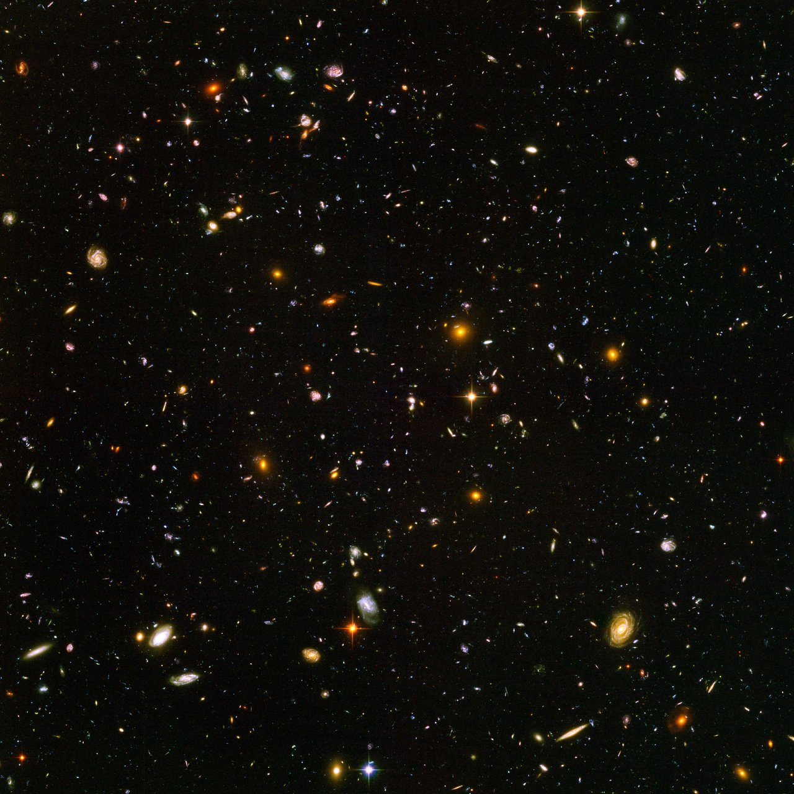
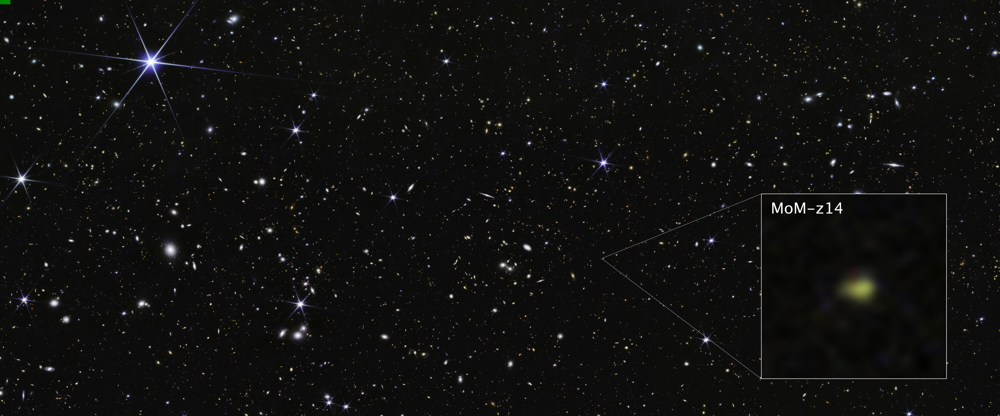
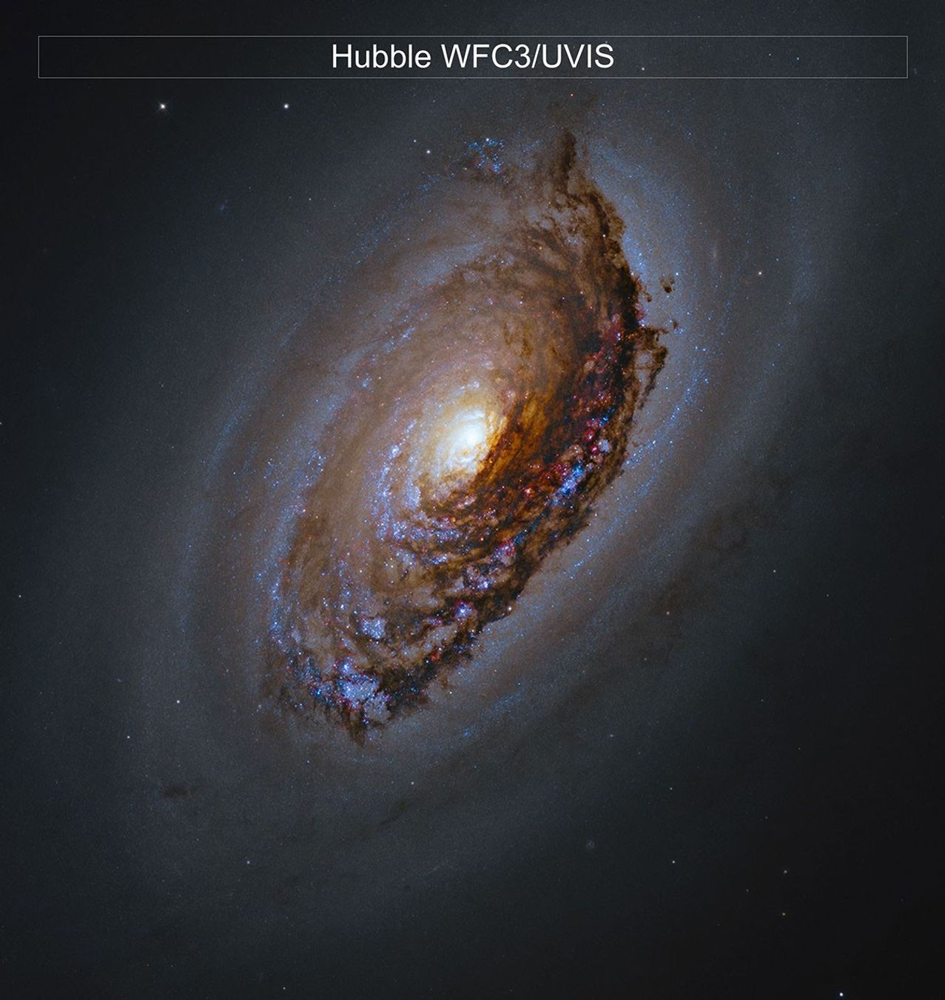
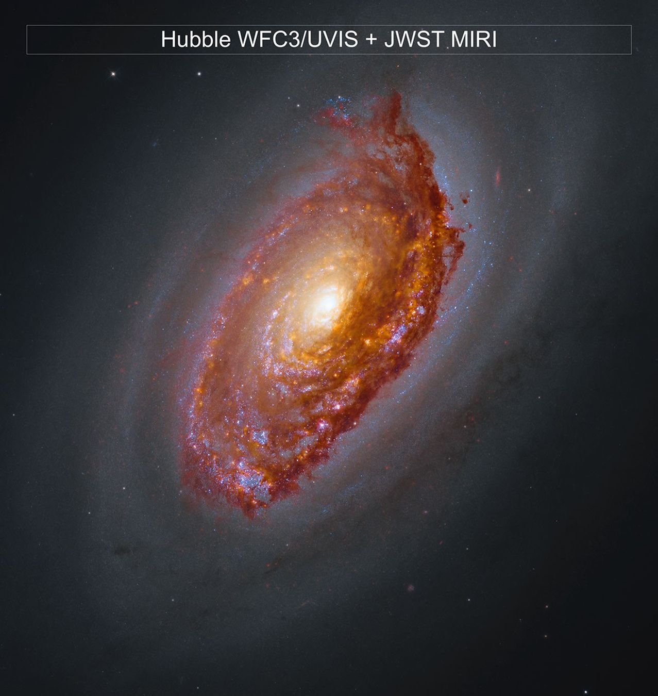
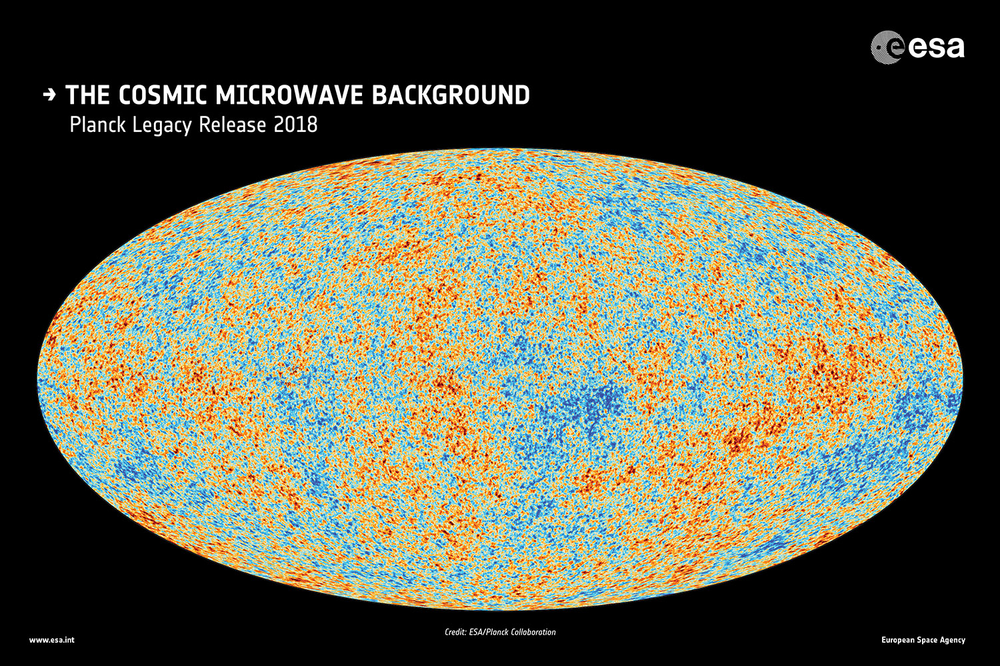
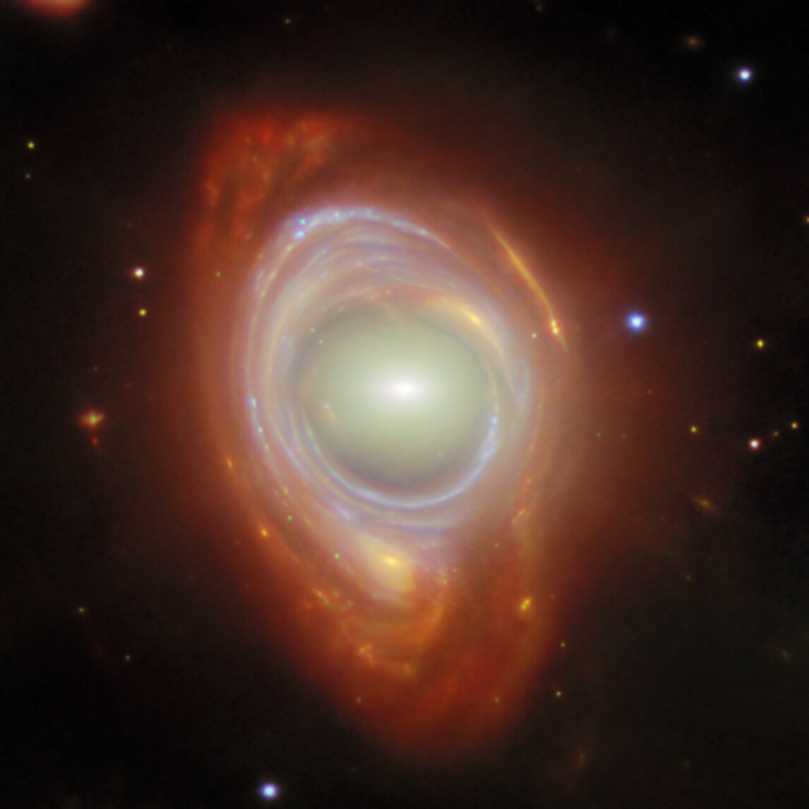

Från lampan till ögat
En ficklampa syns när ljus från den når ögat. Samma sak med en stjärna.
Ljus är elektromagnetisk strålning. Det kan färdas genom tom rymd. Ögat ser bara en liten del av det.
01 / EN SOLUPPGÅNG
Solen lyser.
Ändå ser rymden mörk ut.
02 / FRÅN SOLEN TILL JORDEN
Om ljuset från solen förändras just nu,
när märker vi det här?
LJUSET BEHÖVER UNGEFÄR
8 min 20 s
Det vi ser på solen hände för drygt åtta minuter sedan. [1]
Som en bild med leveranstid. Den visar hur platsen såg ut när ljuset lämnade den.
En ficklampa syns när ljus från den når ögat. Samma sak med en stjärna.
Ljus är elektromagnetisk strålning. Det kan färdas genom tom rymd. Ögat ser bara en liten del av det.
Lys på en vit vägg. Ljuset studsar åt olika håll. En del når ögat, och väggen syns.
Månen gör likadant med solljus. Det kallas reflektion.
I ett dammigt rum kan du se strålen från sidan. Dammet sprider en del av ljuset mot ögat.
Luftens molekyler sprider också ljus. Därför lyser himlen. I tom rymd kan ljuset passera bredvid dig utan att synas. Källor ↗
Rita vågtoppar på ett gummiband och dra i det. Topparna hamnar längre ifrån varandra.
När rymden växer ökar också ljusets våglängd. Ljus från de tidigaste galaxerna har sträckts till infrarött. Webb kan fånga det. Källa ↗
04 / LJUSET LÄNGRE BORTIFRÅN
Teleskop samlar ljus som är för svagt för våra ögon. En del av det har färdats i miljarder år.

01 / EN ANNAN GALAX
Solen är en av Vintergatans stjärnor. Andromeda är en annan galax, med sin egen samling stjärnor.
Ljuset lämnade Andromeda för ungefär 2,5 miljoner år sedan. Så långt tillbaka i tiden ser du när du tittar på galaxen. Källa ↗

02 / ATT SAMLA LJUS
Hubble samlade ljus från ett litet område på himlen i hundratals exponeringar. Till slut framträdde omkring 10 000 galaxer.
Bilden fångar in många platser från olika tider. Hur långt tillbaka kan ljus från galaxer ta oss? Källa ↗

03 / WEBB · JANUARI 2026
Ljuset från MoM-z14 har varit på väg hit i ungefär 13,5 miljarder år. Det lämnade galaxen när universum bara var 280 miljoner år gammalt. Webb fångade det i ett annat område på himlen, COSMOS.
Galaxen är oväntat ljusstark för sin tid, och ljuset visar tecken på mycket kväve. Forskare försöker förstå hur den hann bli så ljusstark och få så mycket kväve så tidigt. Studien ↗
När rymden expanderar sträcks ljusets våglängder. Det här ljuset har blivit infrarött, och Webbs instrument kan fånga det. Om rödförskjutning ↗


HubbleHubble + Webb04 / STOFT I M64
M64 ligger närmare. I Hubbles bild skymmer ett mörkt stoftband en del av galaxen.
Stoftet har tagit upp ljus från stjärnor och strålar ut energi igen. När Webbs infraröda mätningar läggs till syns också det ljuset.

05 / FÖRE STJÄRNORNA
Tidigare studsade ljuset hela tiden mot fria elektroner. Efter ungefär 380 000 år hade universum svalnat så att ljuset kunde färdas fritt.
Det ljuset når oss i dag som mikrovågor, från tiden före de första galaxerna. De tilldelade färgerna i Plancks karta visar små temperaturskillnader. Universum är i dag ungefär 13,8 miljarder år gammalt. Källa ↗

06 / GRAVITATIONEN BÖJER LJUSET
I mitten ligger en elliptisk galax. Bakom den finns en spiralgalax, vars ljus böjs av gravitationen hos galaxen framför.
De ligger nästan i linje med oss. Då kan ljuset från galaxen bakom bilda en ring runt galaxen framför. Formen i bilden beror alltså på vägen ljuset har tagit. Om bilden ↗
05 / EN ANNAN PLANET
Först syns en svag punkt i ett tänkt stjärnfält. Punkten ligger stilla medan teleskopet samlar mer ljus och bilden blir tydligare. Ljuset kommer från stjärnsystemet. Därefter byts observationsvyn till en förklarande modell av samma system, där en planet antas passera framför stjärnan. Lite stjärnljus passerar planetens atmosfär till teleskopets instrument. Två spektrum visar ljuset före och efter atmosfären på samma våglängdsskala. Mörkare band visar var mindre ljus når fram. Banden är ritade exempel och identifierar inga gaser. Förloppet beskrivs också i texten.
Följ bilden när teleskopet samlar mer ljus från samma håll.
Bruset avtar och den svaga punkten syns bättre. I det här tänkta stjärnfältet kommer ljuset från ett avlägset stjärnsystem. Teleskopets speglar leder ljuset till instrument som kan undersöka det. Källa ↗
Anta att en planet passerar framför stjärnan. Lite stjärnljus når då teleskopet genom planetens atmosfär.
Här visas samma system som en modell från sidan. Planeten går inte att se så här nära.
I de mörkare banden når mindre ljus fram. Gaser i atmosfären har absorberat en del av ljuset.
Olika gaser ger olika mönster. Banden här är ritade exempel. I mätningar kan mönstren hjälpa astronomerna att undersöka atmosfären. Källa ↗
En del gaser kan bildas av liv, men också på andra sätt. Därför behöver flera förklaringar prövas, med fler mätningar och kunskap om planeten och stjärnan. Källa ↗
FÖR DEN SOM VILL TITTA NÄRMARE
Fotografier, mätningar och modeller visar olika saker. Här finns underlagen och några förklaringar till bilderna.
Cirka 8 minuter och 20 sekunder vid jordens medelavstånd. Restiden varierar något under året. Solbilden från 20 juni 2013 visar ultraviolett ljus med tilldelad färg: NASA/SDO. Den visar inte hur solen ser ut med blotta ögat.
NASA · All About the Sun ↗Andromedas ljus har färdats ungefär 2,5 miljoner år. Vårt solsystem ingår i Vintergatan. Andromedabilden: ESA/Hubble, Digitized Sky Survey 2; tack till Davide De Martin.
ESA/Hubble · Originalbild av Andromeda ↗NASA Hubble · Att observera kosmisk historia ↗Originalbilden från 2004 innehåller ungefär 10 000 galaxer och kombinerar 800 exponeringar. Sidan använder den färdiga bilden, inte en serie allt längre exponeringar. Bild: NASA, ESA, S. Beckwith (STScI), HUDF Team. Den använda bildversionen publicerades 2006.
ESA/Hubble · Bild och observationsdatum ↗NASA · Galaxer och storskaliga strukturer ↗Rödförskjutningen z = 14,44 placerar observationen omkring 280 miljoner år efter Big Bang i den vanliga kosmologiska modellen. Med universums avrundade ålder på 13,8 miljarder år blir ljusets restid ungefär 13,5 miljarder år. Studien lades ut i maj 2025 och reviderades i januari 2026. NASA rapporterade om den den 28 januari 2026. Objektet ligger i COSMOS-fältet, inte i Hubble Ultra Deep Field. Bild: NASA, ESA, CSA, STScI, R. Naidu (MIT); bildbehandling J. DePasquale (STScI). Ljusstyrkan är en observation; förklaringar till hur galaxen bildades undersöks fortfarande.
ESA/Webb · Originalbild av MoM-z14 ↗Naidu med flera · Forskningsartikeln ↗NASA · Webb-observationen ↗NASA:s Astronomy Picture of the Day publicerade jämförelsen den 16 september 2026. Hubblebilden och kombinationen av Hubble och Webb visar samma utsnitt. Webbs MIRI mäter infraröd strålning från stoft som har absorberat stjärnljus och strålar ut energi. De infraröda mätningarna visas med tilldelade färger. Detta är en aktuell bildpublicering, inte ett påstående om att fenomenet upptäcktes 2026.
Bild: NASA, CSA, ESA, F. Belfiore (ESO), J. Lee (STScI), A. Leroy (OSU), D. Thilker (JHU). Bildbehandling: G. Kober (NASA/Catholic University).
NASA · Webb’s View of M64 ↗Bakgrundsstrålningen kommer från när universum blev genomskinligt, ungefär 380 000 år efter Big Bang. Expansionen har sträckt ljusets våglängder till mikrovågor. Planckkartan visar temperaturvariationer över hela himlen med tilldelade färger. Den är inte ett fotografi av en yttre yta runt universum.
ESA · Originalkarta, Planck 2018 ↗ESA · Planck och den kosmiska bakgrundsstrålningen ↗Universum är omkring 13,8 miljarder år gammalt. Det observerbara universums diameter i dag är ungefär 93 miljarder ljusår i standardmodellen. Det senare är ett beräknat avstånd vid samma kosmiska tid, inte ljusets restid multiplicerad med ljushastigheten. Rymden har expanderat under resan. Horisonten beror på var observatören befinner sig och är ingen fysisk vägg.
ESA · Det observerbara universums storlek ↗NASA · Webb och kosmologi, presentation (PDF) ↗Bild publicerad 27 mars 2025. Galaxen i mitten ligger framför den spiralgalax vars ljus har böjts till en ring. Gravitationen ändrar ljusets väg. Bilden kombinerar observationer från Webb och Hubble, med våglängder återgivna i tilldelade färger.
ESA/Webb, NASA & CSA, G. Mahler
Acknowledgement: M. A. McDonald. Bilden används enligt CC BY 4.0.
Ljus är elektromagnetisk strålning. Ögat registrerar en begränsad del av dess våglängder. Ljus kan nå ögat direkt från en källa eller efter reflektion och spridning. Luftens molekyler sprider solljus, särskilt korta synliga våglängder. I rymdens glesa vakuum finns mycket mindre materia som kan sprida ljus in i blickriktningen.
NASA · Webb och det tidiga universums infraröda ljus ↗NASA · Synligt ljus ↗NASA · Ljusets växelverkan med materia ↗NASA · Varför himlen är blå ↗NASA Webb · Vad ljus är ↗När stjärnljus passerar genom en planets atmosfär kan gaser absorbera vissa våglängder. Spektroskopi används för att undersöka atmosfärens sammansättning. En möjlig biosignatur behöver prövas med fler observationer och kunskap om planeten och stjärnan. Slutet följer ett tänkt stjärnsystem. Det antar en planet som passerar framför stjärnan och visar sedan transitgeometrin från sidan. Planet, ljusväg och absorptionsband är ritade för förklaringen; inga band kopplas till en bestämd gas. Raderna före och efter atmosfären har samma våglängdsskala. Färgerna skiljer våglängder åt; Webb mäter främst infrarött ljus. Planetens yta är skapad i Blender och föreställer ingen observerad planet.
NASA Webb · Att läsa ett transmissionsspektrum ↗NASA Webb · Sökandet efter liv, 18 april 2025; uppdaterad 22 september 2026 ↗Slutets tredimensionella modell är en förenklad illustration inspirerad av Webbs segmenterade spegel. Den visar hur ljus samlas via primärspegeln, sekundärspegeln och intern optik till instrumenten. Stjärnfältet och punkten är ritade. Punkten föreställer stjärnsystemets samlade ljus. Under insamlingen hålls dess läge och storlek fasta medan bilden blir tydligare; indikatorn anger ingen bestämd exponeringstid. Övergången till stjärna och planet byter till en förklarande modell av samma tänkta system. Den föreställer ingen observerad närbild eller dokumenterad upptäckt. Skala, atmosfär och ljusbanor är anpassade för förklaringen.
NASA · Webbs speglar och ljusväg ↗Öppningen använder en AI-genererad illustration, skapad med imagegen utifrån Johans bildreferens. Den visar motivet och stämningen, inte en dokumenterad observation eller skalenliga ljusförhållanden. Rymdbilderna i huvudsektionen är observationsbilder med källorna ovan.